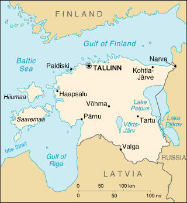

|
Estonia | |
| Introduction Geography People Government Economy Communications Transportation Military Transnational Issues | ||
|  | ||
| Estonia | Introduction | Top of Page |
| Background: | After centuries of Swedish and Russian rule, Estonia attained independence in 1918. Forcibly incorporated into the USSR in 1940, it regained its freedom in 1991 with the collapse of the Soviet Union. Since the last Russian troops left in 1994, Estonia has been free to promote economic and political ties with Western Europe. |
| Estonia | Geography | Top of Page |
| Location: | Eastern Europe, bordering the Baltic Sea and Gulf of Finland, between Latvia and Russia |
| Geographic coordinates: | 59 00 N, 26 00 E |
| Map references: | Europe |
| Area: |
total:
45,226 sq km
land: 43,211 sq km water: 2,015 sq km note: includes 1,520 islands in the Baltic Sea |
| Area - comparative: | slightly smaller than New Hampshire and Vermont combined |
| Land boundaries: |
total:
633 km
border countries: Latvia 339 km, Russia 294 km |
| Coastline: | 3,794 km |
| Maritime claims: |
exclusive economic zone:
limits fixed in coordination with neighboring states
territorial sea: 12 NM |
| Climate: | maritime, wet, moderate winters, cool summers |
| Terrain: | marshy, lowlands |
| Elevation extremes: |
lowest point:
Baltic Sea 0 m
highest point: Suur Munamagi 318 m |
| Natural resources: | shale oil (kukersite), peat, phosphorite, amber, cambrian blue clay, limestone, dolomite, arable land |
| Land use: |
arable land:
25%
permanent crops: 0% permanent pastures: 11% forests and woodland: 44% other: 20% (1996 est.) |
| Irrigated land: | 110 sq km (1996 est.) |
| Natural hazards: | flooding occurs frequently in the spring |
| Environment - current issues: | air heavily polluted with sulfur dioxide from oil-shale burning power plants in northeast; contamination of soil and groundwater with petroleum products, chemicals at former Soviet military bases; Estonia has more than 1,400 natural and manmade lakes, the smaller of which in agricultural areas are heavily affected by organic waste; coastal sea water is polluted in many locations |
| Environment - international agreements: |
party to:
Air Pollution, Air Pollution-Nitrogen Oxides, Air Pollution-Sulphur 85, Air Pollution-Volatile Organic Compounds, Biodiversity, Climate Change, Endangered Species, Hazardous Wastes, Ship Pollution, Ozone Layer Protection, Wetlands
signed, but not ratified: Climate Change-Kyoto Protocol |
| Estonia | People | Top of Page |
| Population: | 1,423,316 (July 2001 est.) |
| Age structure: |
0-14 years:
17.08% (male 123,997; female 119,166)
15-64 years: 68.14% (male 466,823; female 503,032) 65 years and over: 14.78% (male 68,802; female 141,496) (2001 est.) |
| Population growth rate: | -0.55% (2001 est.) |
| Birth rate: | 8.7 births/1,000 population (2001 est.) |
| Death rate: | 13.48 deaths/1,000 population (2001 est.) |
| Net migration rate: | -0.76 migrant(s)/1,000 population (2001 est.) |
| Sex ratio: |
at birth:
1.05 male(s)/female
under 15 years: 1.04 male(s)/female 15-64 years: 0.93 male(s)/female 65 years and over: 0.49 male(s)/female total population: 0.86 male(s)/female (2001 est.) |
| Infant mortality rate: | 12.62 deaths/1,000 live births (2001 est.) |
| Life expectancy at birth: |
total population:
69.73 years
male: 63.72 years female: 76.05 years (2001 est.) |
| Total fertility rate: | 1.21 children born/woman (2001 est.) |
| HIV/AIDS - adult prevalence rate: | 0.04% (1999 est.) |
| HIV/AIDS - people living with HIV/AIDS: | less than 500 (1999 est.) |
| HIV/AIDS - deaths: | less than 100 (1999 est.) |
| Nationality: |
noun:
Estonian(s)
adjective: Estonian |
| Ethnic groups: | Estonian 65.1%, Russian 28.1%, Ukrainian 2.5%, Byelorussian 1.5%, Finn 1%, other 1.8% (1998) |
| Religions: | Evangelical Lutheran, Russian Orthodox, Estonian Orthodox, Baptist, Methodist, Seventh-Day Adventist, Roman Catholic, Pentecostal, Word of Life, Jewish |
| Languages: | Estonian (official), Russian, Ukrainian, English, Finnish, other |
| Literacy: |
definition:
age 15 and over can read and write
total population: 100% male: 100% female: 100% (1998 est.) |
| Estonia | Government | Top of Page |
| Country name: |
conventional long form:
Republic of Estonia
conventional short form: Estonia local long form: Eesti Vabariik local short form: Eesti former: Estonian Soviet Socialist Republic |
| Government type: | parliamentary democracy |
| Capital: | Tallinn |
| Administrative divisions: |
15 counties (maakonnad, singular - maakond): Harjumaa (Tallinn), Hiiumaa (Kardla), Ida-Virumaa (Johvi), Jarvamaa (Paide), Jogevamaa (Jogeva), Laanemaa (Haapsalu), Laane-Virumaa (Rakvere), Parnumaa (Parnu), Polvamaa (Polva), Raplamaa (Rapla), Saaremaa (Kuessaare), Tartumaa (Tartu), Valgamaa (Valga), Viljandimaa (Viljandi), Vorumaa (Voru)
note: counties have the administrative center name following in parentheses |
| Independence: | 6 September 1991 (from Soviet Union) |
| National holiday: | Independence Day, 24 February (1918); note - 24 February 1918 was the date of independence from Soviet Russia, 6 September 1991 was the date of independence from the Soviet Union |
| Constitution: | adopted 28 June 1992 |
| Legal system: | based on civil law system; no judicial review of legislative acts |
| Suffrage: | 18 years of age; universal for all Estonian citizens |
| Executive branch: |
chief of state:
President Lennart MERI (since 5 October 1992)
head of government: Prime Minister Mart LAAR (since 29 March 1999) cabinet: Council of Ministers appointed by the prime minister, approved by Parliament elections: president elected by Parliament for a five-year term; if he or she does not secure two-thirds of the votes after three rounds of balloting, then an electoral assembly (made up of Parliament plus members of local governments) elects the president, choosing between the two candidates with the largest percentage of votes; election last held August-September 1996 (next to be held in the fall of 2001); prime minister nominated by the president and approved by Parliament election results: Lennart MERI reelected president by an electoral assembly after Parliament was unable to break a deadlock between MERI and RUUTEL; percent of electoral assembly vote - Lennart MERI 61%, Arnold RUUTEL 39% |
| Legislative branch: |
unicameral Parliament or Riigikogu (101 seats; members are elected by popular vote to serve four-year terms)
elections: last held 7 March 1999 (next to be held NA March 2003) election results: percent of vote by party - NA%; seats by party - Center Party 28, Union of Pro Patria (Fatherland League) 18, Reform Party 18, Moderates 17, Country People's Party (Agrarians) 7, Coalition Party 7, UPPE 6 |
| Judicial branch: | National Court (chairman appointed by Parliament for life) |
| Political parties and leaders: | Center Party or K [Edgar SAVISAAR, chairman]; Christian People's Party [Aldo VINKEL]; Coalition Party and Rural Union or KMU [Andrus OOBEL, chairman]; Estonian Democratic Party (formerly Estonian Blue Party) [Jaan LAAS]; Estonian Independence Party [leader NA]; Estonian National Democratic Party or ENDP [leader NA]; Estonian Pensioners and Families Party [Mai TREIAL]; Estonian Progressive Party [Andra VEIDEMANN]; Estonian Republican Party [leader NA]; Estonian Social-Democratic Labor Party [Tiit TOOMSALU]; Estonian Rural People's Union (1999 merger of Estonian Country People's Party and the Estonian Rural Union) [Arvo SIRENDI]; Party of Consolidation Today [leader NA]; People's Party Moderates (1999 merger of People's Party and Moderates) [Andres TARAND]; Reform Party or RE [Siim KALLAS, chairman]; Russian Party in Estonia [Nikolai MASPANOV]; Russian Unity Party [Igor SEDASHEV]; Union of Pro Patria or Fatherland League (Isamaaliit) [Mart LAAR, chairman]; United People's Party or UPPE [Viktor ANDREJEV, chairman] |
| Political pressure groups and leaders: | NA |
| International organization participation: | BIS, CBSS, CCC, CE, EAPC, EBRD, ECE, EU (applicant), FAO, IAEA, IBRD, ICAO, ICFTU, ICRM, IFC, IFRCS, IHO, ILO, IMF, IMO, Interpol, IOC, IOM (observer), ISO (correspondent), ITU, OPCW, OSCE, PFP, UN, UNCTAD, UNESCO, UNMIBH, UNMIK, UNTSO, UPU, WEU (associate partner), WHO, WIPO, WMO, WTrO |
| Diplomatic representation in the US: |
chief of mission:
Ambassador Sven JURGENSON
chancery: 2131 Massachusetts Avenue NW, Washington, DC 20008 telephone: [1] (202) 588-0101 FAX: [1] (202) 588-0108 consulate(s) general: New York |
| Diplomatic representation from the US: |
chief of mission:
Ambassador Melissa WELLS
embassy: Kentmanni 20, 15099 Tallinn mailing address: use embassy street address telephone: [372] 668-8100 FAX: [372] 668-8134 |
| Flag description: | pre-1940 flag restored by Supreme Soviet in May 1990 - three equal horizontal bands of blue (top), black, and white |
| Estonia | Economy | Top of Page |
| Economy - overview: | In 2000, Estonia rebounded from the Russian financial crisis by scaling back its budget and reorienting trade away from Russian markets into EU member states. After GDP shrank 1.1% in 1999, the economy made a strong recovery in 2000, with growth estimated at 6.4% - the highest in Central and Eastern Europe. Estonia joined the World Trade Organization in November 1999 - the second Baltic state to join - and continues its EU accession talks. For 2001, Estonians predict GDP to grow around 6%, inflation of between 4.2%-5.3%, and a balanced budget. Substantial gains were made in completing privatization of Estonia's few remaining large, state-owned companies in 2000, and this momentum is expected to continue in 2001. Estonia hopes to join the EU during the next round of enlargement tentatively set for 2004. |
| GDP: | purchasing power parity - $14.7 billion (2000 est.) |
| GDP - real growth rate: | 6.4% (2000 est.) |
| GDP - per capita: | purchasing power parity - $10,000 (2000 est.) |
| GDP - composition by sector: |
agriculture:
3.6%
industry: 30.7% services: 65.7% (1999) |
| Population below poverty line: | 8.9% (1995 est.) |
| Household income or consumption by percentage share: |
lowest 10%:
3.2%
highest 10%: 28.5% (1996) |
| Inflation rate (consumer prices): | 4.1% (1999 est.) |
| Labor force: | 785,500 (1999 est.) |
| Labor force - by occupation: | industry 20%, agriculture 11%, services 69% (1999 est.) |
| Unemployment rate: | 11.7% (1999 est.) |
| Budget: |
revenues:
$1.37 billion
expenditures: $1.37 billion, including capital expenditures of $NA (1997 est.) |
| Industries: | oil shale, shipbuilding, phosphates, electric motors, excavators, cement, furniture, clothing, textiles, paper, shoes, apparel |
| Industrial production growth rate: | 5% (2000 est.) |
| Electricity - production: | 7.782 billion kWh (1999) |
| Electricity - production by source: |
fossil fuel:
99.72%
hydro: 0.09% nuclear: 0% other: 0.19% (1999) |
| Electricity - consumption: | 6.807 billion kWh (1999) |
| Electricity - exports: | 530 million kWh (1999) |
| Electricity - imports: | 100 million kWh (1999) |
| Agriculture - products: | potatoes, fruits, vegetables; livestock and dairy products; fish |
| Exports: | $3.1 billion (f.o.b., 2000) |
| Exports - commodities: | machinery and equipment 24%, wood products 20%, textiles 17%, food products 9%, metals, chemical products (1999) |
| Exports - partners: | Finland 19.4%, Sweden 18.8%, Russia 9.2%, Latvia 8.7%, Germany 7.5%, US 2.5% (1999) |
| Imports: | $4 billion (f.o.b., 2000) |
| Imports - commodities: | machinery and equipment 31%, chemical products 13%, foodstuffs 11%, metal products 8%, textiles 8% (1999) |
| Imports - partners: | Finland 22.8%, Russia 13.5%, Sweden 9.3%, Germany 9.3%, Japan 4.7% (1999) |
| Debt - external: | $1.6 billion (2000 est.) |
| Economic aid - recipient: | $137.3 million (1995) |
| Currency: | Estonian kroon (EEK) |
| Currency code: | EEK |
| Exchange rates: | krooni per US dollar - 16.663 (January 2001), 16.969 (2000), 14.678 (1999), 14.075 (1998), 13.882 (1997), 12.034 (1996); note - krooni are tied to the German deutsche mark at a fixed rate of 8 to 1 |
| Fiscal year: | calendar year |
| Estonia | Communications | Top of Page |
| Telephones - main lines in use: | 476,078 (yearend 1998) |
| Telephones - mobile cellular: | 475,000 (yearend 2000) |
| Telephone system: |
general assessment:
foreign investment in the form of joint business ventures greatly improved telephone service; Internet services available throughout most of the country; about 150,000 unfilled subscriber requests
domestic: local - the Ministry of Transport and Communications is expanding cellular telephone services to form rural networks; intercity - highly developed fiber-optic backbone (double loop) system presently serving at least 16 major cities (1998) international: fiber-optic cables to Finland, Sweden, Latvia, and Russia provide worldwide packet-switched service; two international switches are located in Tallinn |
| Radio broadcast stations: | AM 3 (all AM stations inactive since July 1998), FM 82, shortwave 1 (1998) |
| Radios: | 1.01 million (1997) |
| Television broadcast stations: | 31 (plus five repeaters) (September 1995) |
| Televisions: | 605,000 (1997) |
| Internet country code: | .ee |
| Internet Service Providers (ISPs): | 28 (2000) |
| Internet users: | 309,000 (2000) |
| Estonia | Transportation | Top of Page |
| Railways: |
total:
1,018 km common carrier lines only; does not include dedicated industrial lines
broad gauge: 1,018 km 1.520-m gauge (132 km electrified) (1995) |
| Highways: |
total:
30,300 km
paved: 29,200 km (including 75 km of expressways); note - these roads are said to be hard-surfaced, and include, in addition to conventionally paved roads, some that are surfaced with gravel or other coarse aggregate, making them trafficable in all weather unpaved: 1,100 km (2000) |
| Waterways: | 320 km (perennially navigable) |
| Pipelines: | natural gas 420 km (1992) |
| Ports and harbors: | Haapsalu, Kunda, Muuga, Paldiski, Parnu, Tallinn |
| Merchant marine: |
total:
44 ships (1,000 GRT or over) totaling 253,460 GRT/219,727 DWT
ships by type: bulk 2, cargo 19, combination bulk 1, container 5, petroleum tanker 1, roll on/roll off 10, short-sea passenger 6 (2000 est.) |
| Airports: | 32 (2000 est.) |
| Airports - with paved runways: |
total:
8
2,438 to 3,047 m: 7 under 914 m: 1 (2000 est.) |
| Airports - with unpaved runways: |
total:
24
over 3,047 m: 1 2,438 to 3,047 m: 5 1,524 to 2,437 m: 7 914 to 1,523 m: 5 under 914 m: 6 (2000 est.) |
| Estonia | Military | Top of Page |
| Military branches: | Ground Forces, Navy/Coast Guard, Air and Air Defense Force (not officially sanctioned), Maritime Border Guard, Volunteer Defense League (Kaitseliit), Security Forces (internal and border troops) |
| Military manpower - military age: | 18 years of age |
| Military manpower - availability: | males age 15-49: 359,677 (2001 est.) |
| Military manpower - fit for military service: | males age 15-49: 282,418 (2001 est.) |
| Military manpower - reaching military age annually: | males: 11,164 (2001 est.) |
| Military expenditures - dollar figure: | $70 million (FY99) |
| Military expenditures - percent of GDP: | 1.2% (FY99) |
| Estonia | Transnational Issues | Top of Page |
| Disputes - international: | Estonian and Russian negotiators reached a technical border agreement in December 1996 which has not been signed nor ratified by Russia as of February 2001 |
| Illicit drugs: | transshipment point for opiates and cannabis from Southwest Asia and the Caucasus via Russia, cocaine from Latin America to Western Europe and Scandinavia, and synthetic drugs from Western Europe to Scandinavia; possible precursor manufacturing and/or trafficking; synthetic drug production growing, trafficked to Russia, Baltics, Finland |
{kind=link}
{kind=link}